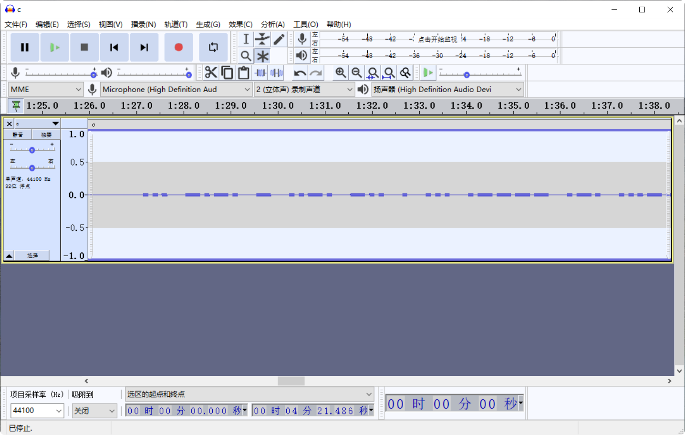

音频隐写
常见的音频文件类型有MP3和WAV。
- WAV
- 是一种无损音频格式，通常使用 PCM（脉冲编码调制）进行编码。
- 文件大小较大，因为它包含完整的未压缩音频数据。
- MP3
- 是一种有损音频格式，通过压缩算法去除人耳不易察觉的音频数据，使文件更小。
- FLAC Sonic Visualiser
https://deepsound.en.uptodown.com/windows
波形图隐写
例题分析：[SCTF 2021]in_the_vaporwaves
中间部分音频左右声道反相，尝试将左右声道合并。
import wave
output_file = "output.wav"
with wave.open("c.wav", "rb") as wav_file:
# 获取音频参数
params = wav_file.getparams()
num_channels, sample_width, frame_rate, num_frames = params[:4]
# 输出音频参数
print(f"声道数: {num_channels}")
print(f"样本宽度: {sample_width} 字节")
print(f"采样率: {frame_rate} Hz")
print(f"帧数: {num_frames}")
# 读取所有音频数据
audio_data = wav_file.readframes(num_frames)
# 收集所有混合后的采样点
mixed_data = bytearray()
for i in range(num_frames):
# 计算每个采样点的起始位置
start = i * num_channels * sample_width
# 计算每个采样点的结束位置
end = start + sample_width
# 提取左声道和右声道数据
left_channel = audio_data[start:end]
right_channel = audio_data[start + sample_width : end + sample_width]
# 处理单声道文件时，右声道可能不存在
if len(right_channel) < sample_width:
right_channel = left_channel
# 将左声道和右声道数据混合为单声道
mixed_channel = (
int.from_bytes(left_channel, "little", signed=True)
+ int.from_bytes(right_channel, "little", signed=True)
) // 2
# 转回字节
mixed_bytes = mixed_channel.to_bytes(sample_width, "little", signed=True)
mixed_data.extend(mixed_bytes)
# 写入新的WAV文件
with wave.open(output_file, "wb") as f:
f.setnchannels(1) # 设置为单声道
f.setsampwidth(sample_width)
f.setframerate(frame_rate)
f.writeframes(mixed_data)
print("单声道WAV文件已生成：", output_file)
打开output.wav，提取摩尔斯电码。

... -.-. - ..-. -.. . ... .---- .-. ...-- ..--.- -.. .-. .. ...- . ... ..--.- .. -. - ----- ..--.- ...- .- .--. --- .-. .-- .--.-. ...- . ...
在CyberChef上解码即可。
方法二：
Audacity
点击菜单栏轨道>混音>混合立体声至单声道。

合并为单声道，结果如下图所示：

Sonic Visualiser
点击菜单栏Layer（图层）>Add Spectrogram（添加频谱图）>All Channels Mixed（所有声道混合），将所有声道的频谱数据混合成一个单一的频谱图。

频谱图
LSB
MP33stego
工具
[WAV]
[Steghide]